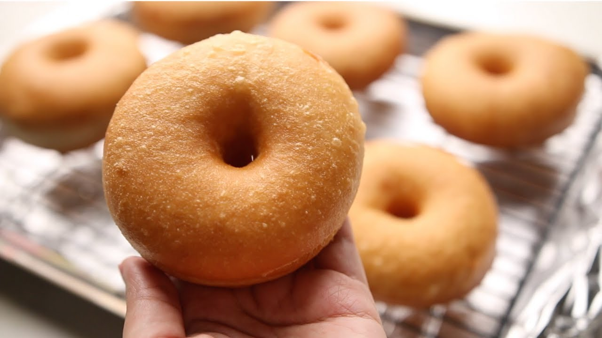

Donuts

Description
A recipe for making classic donuts at home better than these you can by at stores. Fresh and fluffy donuts and doesn't absorb oil!
Aya Habib's Video
Ingredients (6 Donuts)
- 270 g flour (2 1/4 cups)
- 125 ml Milk (0.5 cup)
- 1 Egg
- 1 tbsp acitive dry Yeast
- 50 grams butter(1/4 cup)
- 25g Sugar (2 tbsps)
- Sprinkle of Salt
- 1 tsp Vanilla
Steps:
- Put the flour, the sugar, the yeast and the butter (at room temperature) into a big bowl.
- Add the vanilla and the egg
- Use a mixer to knead the dough at low speed to avoid flour ventilation
You can also knead it manually. It is a sticky dough but don't try to add extra flour so that it stays fluffy.
- We add milk slowly while kneading
- Keep kneading for 10-15 minutes until the dough is soft
- Put the dough in a bowl with a wipe of oil and let it rest for 1-2 hours till the size doubles
- Roll the dough out to 1.5 cm thickness, cut into circles and cut into holes
- Let the donuts rest for other 30-45 minutes
- Prepare the oil. Using a heavy-bottomed pot heat oil to 160°C
- Fry the donuts for 2-3 minutes on each side then remove